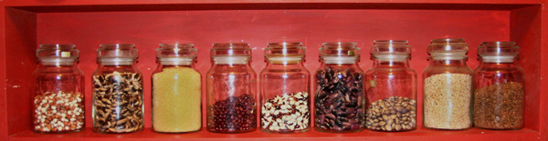

Lijst van vegetarische producten

Door op de voedingsmiddelen te klikken, verschijnt er telkens een beschrijving, alsook enkele recepten.
Soja-afgeleiden
Granen
Peulvruchten
- Linzen
- Droge bonen
- Gebroken erwten
- Kikkererwten
- Tuinbonen
Andere vegetarische producten
- Quinoa
- Seitan
- Quorn
- Hennep
- Fonio